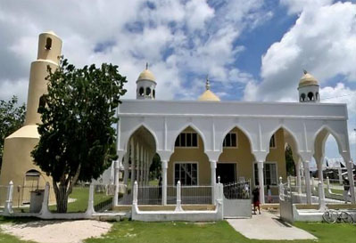
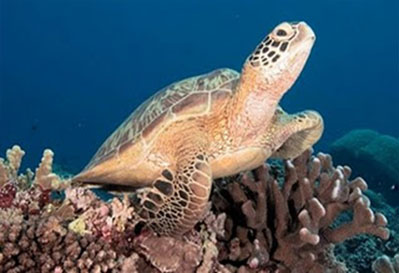
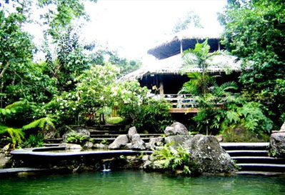

ARMM ( Autonomous Region in Muslim Mindanao)
TAWI-TAWI
Top Things to do

Sheik Makhdum Mosque
Simunul
The mosque is situated at Tubig Indangan in Simunul Islandis considered to be the first mosque ever built in Phil. Sail. This great work is credited
to Sheik Karimmul Makhdum, an Arab missionary who in 1380 AD reached the shores of Simunol and propagated the Islam religion.

Turtle Islands
Taganak
also known as “Taganak Island” to the people of Tawi-Tawi. TurtleIsland vaunt of its sea turtle which lay hundred of eggs on its seashore.
This island was also declared as Natural Wildlife Sanctuary.

Bongao Peek
Simunol
on of the pride of Tawi-Tawi projecting luscious out growths of green forests where hundreds of varied sized monkeys of white and brown varieties find their sanctuary.
People who traverse the peak by nightfall speak of its spell sorcery. Going deeper into the peak one can almost touch the pretty heads of wild but tame – looking monkeys which roam and acrobat on the well of tree branches.